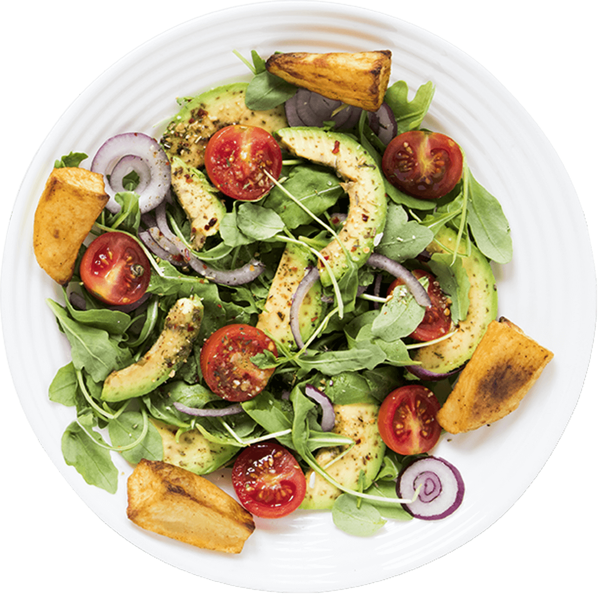

Здоровая еда - это просто!
Сеть магазинов полезных продуктов питания, производство которых основано на принципах и стандартах органического чистых продуктов

Авокадо 134руб
Картофель 169 руб
Томаты 215 руб